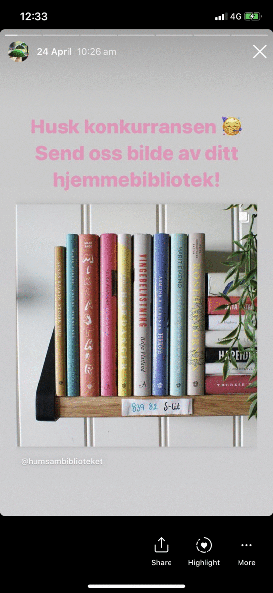

Bokdag-konkurranse
HumSam-biblioteket arrangerer konkurranser gjennom sosiale medier. Vi arrangerte en konkurranse i anledning Verdens bokdag, der bilder og video ble vist på Instagram stories (forsvinner etter 24 timer). Vi har samarbeidet om bildene av ulike bibliotek, og så har jeg hatt ansvar for å publisere bilder og skrive tekst.
Vignett til Verdens bokdag-konkurranse
Videosnutt til å skape spenning før vi publiserte konkurransen. Film, klipp og redigering av meg.
Bilder fra Bokdag-konkurranse
Dette er også Instagram stories, med en oppfordring til følgere om å delta i konkurransen. Bildene er her satt sammen til en GIF slik at det ser lignende ut som det gjorde ved publisering.
Videoer til lockdown-periode
Da Norge stengte ned i mars trengte biblioteket å formidle informasjon om alternative tjenester og løsninger. Disse videoene ble lagt ut som "stories" på instagram og forsvinner etter 24 timer. Formålet er å formidle annerledes-tilbudene som eksisterte da samfunnet som helhet var stengt, på en lettfattelig og morsom måte.
Introduksjon til Unntaksbiblioteket
Hvordan levere bøker i Takeaway-biblioteket
Bok-anbefaling til Pride
Til pridemåneden 2020 satt Universitetsbiblioteket sammen en anbefaling av faglitteratur. I den anledning foreslo og gjennomførte jeg en gjenskaping av forsiden på banebrytende skeiv litteratur som et akkompagnement til litteraturlisten.